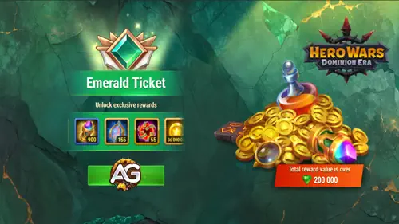
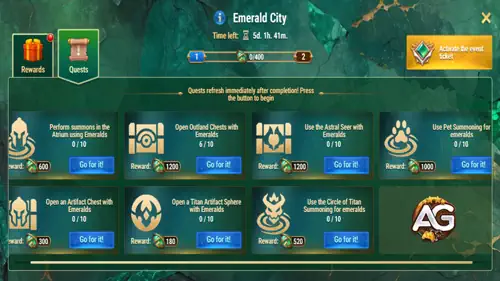

O evento Cidade Esmeralda é um dos desafios por tempo limitado mais recompensadores em Hero Wars: Dominion Era.
Ele combina estratégia, gerenciamento de recursos e um pouco de sorte — convidando os jogadores a avançar em busca de prêmios maiores.
Se você já se perguntou até onde seus esmeraldas podem te levar, este guia mostrará todas as vantagens escondidas dentro do evento.
Durante o Cidade Esmeralda, as missões são redefinidas assim que você as completa, permitindo que você encadeie recompensas rapidamente.
Ao gastar esmeraldas, você ganha Experiência de Esmeralda, uma moeda especial do evento que preenche seu passe de evento.
Quanto mais Experiência de Esmeralda você acumula, mais alto você sobe — e melhores recompensas você recebe.
Também há uma trilha paga disponível para jogadores que desejam um impulso extra, oferecendo recompensas premium além das gratuitas.
Seja você um jogador casual ou alguém que investe bastante, este evento oferece oportunidades valiosas de progressão.

Evento Cidade Esmeralda - Hero Wars: Dominion Era, um jogo desenvolvido pela Nexters.
Visão Geral das Missões do Cidade Esmeralda
As missões são redefinidas imediatamente após a conclusão, permitindo que você encadeie recompensas ao longo do evento.
Basta pressionar o botão para iniciar cada tarefa. Quase todas as missões envolvem
gastar esmeraldas em recursos específicos do jogo, o que então recompensa você com
Experiência de Esmeralda — o recurso essencial para subir de nível no passe do evento.

Missões de Cidade Esmeralda, Hero Wars.
Invocações no Átrio (Esmeraldas)
Realize invocações no Átrio usando esmeraldas para ganhar Experiência de Esmeralda rapidamente.
Este é um dos métodos mais eficientes para progredir no início do evento.
Recompensa: x10 → 600 de Experiência de Esmeralda
Custos:
Invocação x1 — 200 Esmeraldas
Invocação x10 — 1500 Esmeraldas
Abertura de Baús de Outland
Abrir Baús de Outland durante o evento oferece um ótimo valor, especialmente porque as primeiras aberturas custam menos esmeraldas.
Recompensa: x10 → 1200 de Experiência de Esmeralda
Custos:
Abrir Baú de Outland x1 — 90 Esmeraldas
Abrir Baú de Outland x2 — 90 Esmeraldas
Abrir Baú de Outland x3 — 90 Esmeraldas
Abrir Baú de Outland x4 — 90 Esmeraldas
Abrir Baú de Outland x5 — 90 Esmeraldas
Abrir Baú de Outland x6 — 90 Esmeraldas
Abrir Baú de Outland x7 — 200 Esmeraldas
Abrir Baú de Outland x8 — 200 Esmeraldas
Abrir Baú de Outland x9 — 200 Esmeraldas
Abrir Baú de Outland x10 — 200 Esmeraldas
Dica: Abra 6 Baús de Outland por dia.
Cada um custa apenas 90 esmeraldas. Após o sexto baú, o custo sobe para 200 esmeraldas — tornando as aberturas adicionais ineficientes.
Astral Seer (Uso de Esmeraldas)
Usar o Astral Seer é outra missão importante que concede uma grande quantidade de Experiência de Esmeralda.
Recompensa: x10 → 1200 de Experiência de Esmeralda
Custos:
Abrir Astral Seer x1 — 350 Esmeraldas
Abrir Astral Seer x10 — 3000 Esmeraldas
Abertura de Baú de Artefato
Baús de Artefato são uma boa opção se você deseja melhorar heróis e progredir no evento ao mesmo tempo.
Recompensa: x10 → 300 de Experiência de Esmeralda
Custos:
Abrir Baú de Artefato x1 — ()
Abrir Baú de Artefato x10 — 800 Esmeraldas
Abertura de Esferas de Artefato de Titã
Jogadores de Titãs se beneficiam muito desta missão, pois ela contribui para o progresso dos Titãs enquanto aumenta os níveis do evento.
Recompensa: x10 → 180 de Experiência de Esmeralda
Custos:
Esfera de Artefato de Titã x10 — 500 Esmeraldas
Esfera de Artefato de Titã x100 — 4500 Esmeraldas
Círculo de Invocação de Titãs
Outra missão focada em Titãs, voltada para invocações no Círculo de Invocação usando esmeraldas.
Recompensa: x10 → 520 de Experiência de Esmeralda
Custos:
Círculo de Invocação de Titãs x1 — (Esmeraldas)
Círculo de Invocação de Titãs x5 — 700 Esmeraldas
Invocação de Mascotes
As missões de Invocação de Mascotes oferecem algumas das maiores recompensas de Experiência de Esmeralda do evento.
Excelente para jogadores focados em equipes de mascotes ou no poder geral da conta.
Recompensa: x10 → 1000 de Experiência de Esmeralda
Custos:
Invocação de Mascote x1 — (preço em Esmeraldas varia)
Invocação de Mascote x10 — 2500 Esmeraldas
Estratégias para F2P, Baixo Investimento e Jogadores VIP
O evento Cidade Esmeralda recompensa todos os tipos de jogadores, mas sua abordagem deve mudar
dependendo do seu nível de investimento. Abaixo estão estratégias otimizadas para F2P, jogadores
de baixo gasto e VIP, ajudando você a maximizar a Experiência de Esmeralda e obter o maior valor
possível do evento.
Estratégia F2P (Free-to-Play)
Jogadores F2P precisam focar na eficiência acima de tudo. Como as esmeraldas são limitadas,
evite tarefas de alto custo e priorize atividades que oferecem a melhor proporção
experiência-por-esmeralda.
Abra exatamente 6 Baús de Outland por dia.
Os primeiros seis custam 90 esmeraldas cada; depois disso, o preço sobe para 200, o que não é eficiente.
Evite aberturas x1 no Astral Seer.
O custo (350 esmeraldas) é muito alto pela recompensa. Guarde para aberturas x10, se possível.
Ignore Invocações de Mascotes e Esferas de Titã x100.
Elas são caras e só valem a pena para jogadores com orçamentos maiores.
Guarde esmeraldas antes do evento.
O evento dura alguns dias; não é necessário gastar tudo no primeiro dia.
Foque no Baú de Artefato x10
se você estiver perto de melhorar um artefato importante de um herói.
Jogadores F2P conseguem alcançar uma boa parte do passe gratuito, especialmente se seguirem
a estratégia diária de Outland. Pode exigir disciplina, mas as recompensas acumulam rápido.
Aviso Importante: O evento atual Cidade Esmeralda oferece pouco valor para a maioria
dos jogadores. As recompensas não são muito atrativas para a quantidade de esmeraldas exigida,
e o passe pago de $29 oferece retorno limitado. Gaste apenas o que for confortável para você
e considere guardar suas esmeraldas para eventos futuros com melhores ofertas e maior eficiência.
Estratégia para Jogadores de Baixo Investimento
Jogadores de baixo investimento têm mais flexibilidade e podem buscar completar uma porcentagem maior
do passe do evento. O objetivo é combinar gastos eficientes de esmeraldas com uma ou duas tarefas premium.
Ative a trilha paga se as recompensas forem úteis para seus objetivos
(skins, recursos, melhorias de herói ou itens exclusivos).
Faça Invocações no Átrio x10 para melhor valor do que invocações individuais.
Use o Astral Seer x10 pelo menos uma vez.
Isso concede excelente Experiência de Esmeralda e impulsiona o progresso do evento.
Considere Invocação de Mascotes x10 se você já investe em mascotes —
essa tarefa dá uma das maiores recompensas de experiência.
Mantenha a estratégia F2P de Outland para o melhor valor diário.
Jogadores de baixo investimento geralmente conseguem completar toda a trilha gratuita e uma grande parte
da trilha paga sem gastar demais, especialmente se distribuírem o uso de esmeraldas ao longo dos dias do evento.
Estratégia VIP / Alto Investimento
Jogadores VIP podem completar o evento rapidamente e aproveitar os melhores pacotes de valor.
Aqui, o foco não é a escassez, mas sim maximizar o crescimento geral da conta durante o evento.
Compre o passe pago cedo para reivindicar recompensas bônus conforme progride.
Use o Astral Seer x10 várias vezes.
Esta é uma das tarefas mais fortes para gerar Experiência de Esmeralda.
Faça Invocações de Mascotes x10 de forma consistente.
O progresso de mascotes é lento sem esmeraldas, então jogadores VIP se beneficiam muito disso.
Abra Esferas de Artefato de Titã x100 se estiver focado em aprimorar Titãs.
Faça Invocações no Átrio x10 até alcançar o herói ou Soul Stone desejado.
Finalize Outland todos os dias (10 baús completos).
Embora apenas os primeiros seis sejam baratos, jogadores VIP podem arcar com os extras para progresso adicional.
Jogadores VIP podem facilmente terminar o evento em 1–2 dias, se quiserem, mas distribuir os gastos
até o fim do evento garante valor consistente e evita perder resets diários.
Conclusão
Conclusão do Cidade Esmeralda – Evento Ruim ou Não?
O evento Cidade Esmeralda atualmente está muito caro para jogadores F2P e até mesmo para jogadores comuns,
especialmente considerando que as recompensas não são muito atraentes. O passe pago custa cerca de $29
e oferece retorno limitado pelo preço. Se você decidir gastar esmeraldas, faça isso com cuidado —
invista apenas o que puder e aguarde eventos futuros que geralmente trazem ofertas melhores e maior eficiência.
Sobre o autor
Alexandre Domingos é pós-graduado em Engenharia e atua como Supervisor de Produção. Nas horas vagas, se aventura como youtuber e blogueiro no Alexandre Games, unindo sua paixão por tecnologia e estratégia com o mundo dos games. Desde os 5 anos mergulha nesse universo, jogando em plataformas clássicas como MSX, Master System, Nintendo e até em um velho PC 286. Desde 2019, Alexandre também joga Hero Wars e Mobile Legends, entre outros jogos mobile, criando guias, tutoriais e análises para a comunidade.
Você gostou do nosso Guia do evento Cidade Esmeralda para Hero Wars (Web e Facebook)? Há algo que não entendeu ou gostaria de sugerir mudanças? Convidamos você a se juntar à nossa sessão de comentários na página do Alexandre Games Blog. Não hesite em expressar sua opinião, clarificar suas dúvidas e compartilhar sua sugestões. Clique no botão abaixo para começar:


 Hero Wars Dominion Era: Guias de Heróis - Domine com Cada Herói
Hero Wars Dominion Era: Guias de Heróis - Domine com Cada Herói

 Hero Wars: Dominion Era Tier List 2025 - Melhores Heróis Classificados
Hero Wars: Dominion Era Tier List 2025 - Melhores Heróis Classificados
 Guia Completo dos Mapas de Aventura dos Mascotes para Hero Wars: Dominion Era
Guia Completo dos Mapas de Aventura dos Mascotes para Hero Wars: Dominion Era

 Resgate seus Presentes Diários para Hero Wars: Dominion Era - Web/FB
Resgate seus Presentes Diários para Hero Wars: Dominion Era - Web/FB